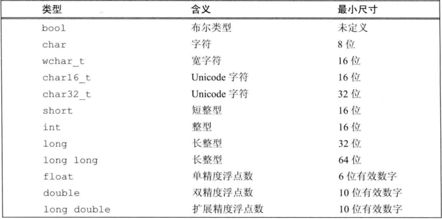

开始
C++ 在 C 语言的基础上添加了面向对象编程和泛型编程
C++继承了C 语言高效、简洁、快速和可移植性的传统。
C++面句对象的特性带来了全新的编程方法，这种方法是为应付复杂程度不断提商的现代编程任务而设计的。
C++的模板特性提供了一种全新的编程方法——泛型编程。
iostream 库包含两个基础类型 istream 和 ostream，分别表示输入流和输出流。标准输入 cin 是 istream 类型的对象，标准输出 cout 是 ostream 类型的对象， ostream 对象还有 cerr（警告和错误信息）和 clog（一般信息）。
1 | std::cout<<"enter :"<<std::endl; |
写入 endl 的效果是结束当前行，并将与设备关联的缓冲区(buffer)中的内容刷到设备中。
变量和基本类型
内置类型和变量
算术类型的尺寸（所占比特数）在不同机器上有所差别，下表列出C++标准规定的最小尺寸。

类型选择经验建议：
- 当明确知晓数值不可能为负时，选用无符号类型
- 使用 int 执行整数运算
- 在算术运算中不要使用 char 或 bool
- 执行浮点数运算选用 double
初始化不是赋值,初始化的含义是创建变量时赋予其一个初始值，而赋值的含义是把对象的当前值擦除，而以一个新值来替代。
C++11新标准的一部分，用花括号来初始化变量得到了全面应用。
1 | int a = 0; |
定义于函数体内的内置类型变量将不被初始化，其值未定义。类的对象如果没有显式地初始化，则其值由类确定。
如果想声明一个变量而非定义它，就在变量名前添加关键字 extern，而且不要显式地初始化变量：
1 | extern int i; // 声明 i |
变量能且只能被定义一次，但是可以被多次声明。
引用（reference）为对象起了另外一个名字，引用类型引用(refers to)另外一种类型。通过将声明符写成 &d 的形式来定义引用类型，其中 d 是声明的变量名:
1 | int val = 1024; |
引用并非对象，相反的，它只是为一个已经存在的对象所起的另外一个名字，所以不能定义引用的引用。
指针（pointer）是“指向（point to)”另外一种类型的复合类型。与引用类似，指针也实现了对其他对象的间接访问。然而指针与引用相比又有很多不同点。
其一，指针本身就是一个对象，允许对指针赋值和拷贝，而且在指针的生命周期内它可以先后指向几个不同的对象。
其二，指针无须在定义时赋初值。和其他内置类型一样，在块作用域内定义的指针如果没有被初始化，也将拥有一个不确定的值。
1 | int *ip1, *ip2; // ip1和ip2都是指向int型对象的指针 |
指针的类型要与它所指的对象严格匹配，但是有两个例外。
- 允许一个指向常量的指针指向一个非常量
指针的值（即地址）应属于下列4种状态之一：
- 指向一个对象
- 指向紧邻对象所占空间的下一个位置
- 空指针，意味着指针没有指向任何对象
- 无效指针，上述情况之外的其他值
当用到一个预处理变量时，预处理器会自动地将它替换为实际值，因此用NULL初始化指针和用0初始化指针是一样的。在新标准下，现在的C++程序最好使用nullptr，同时尽量避免使用NULL。
void* 是一种特殊的指针类型，可用于存放任意对象的地址。一个void*指针存放着一个地址，这一点和其他指针类似。不同的是，我们对该地址中到底是个什么类型的对象并不了解：
1 | double obj=3.14, *pd = &obj; |
利用void* 指针能做的事儿比较有限：拿它和别的指针比较、作为函数的输入或输出，或者赋给另外一个void* 指针。不能直接操作void* 指针所指的对象，因为我们并不知道这个对象到底是什么类型，也就无法确定能在这个对象上做哪些操作。
指向指针的指针
1 | int ival = 1024; |
指向指针的引用
引用本身不是一个对象，因此不能定义指向引用的指针。但指针是对象，所以存在对指针的引用：
1 | int i = 42; |
面对一条比较复杂的指针或引用的声明语句时，从右向左阅读有助于弄清楚它的真实含义。
const限定符
有时我们希望定义这样一种变量，它的值不能被改变。因为const对象一旦创建后其值就不能再改变，所以const对象必须初始化。
1 | const int buff = 512; |
如果想在多个文件之间共享const对象，必须在变量的定义之前添加extern关键字。
可以把引用绑定到 const 对象上，就像绑定到其他对象上一样，我们称之为对常量的引用，简称常量引用。与普通引用不同的是，对常量的引用不能被用作修改它所绑定的对象：
1 | int i = 42; |
与引用一样，也可以令指针指向常量或非常量，指向常量的指针(pointer to const)不能用于改变其所指对象的值。要想存放常量对象的地址，只能使用指向常量的指针：
1 | const double pi = 3.14; |
前面提到，指针的类型必须与其所指对象的类型一致，但是有两个例外。第一种例外情况是允许令一个指向常量的指针指向一个非常量对象：
1 | double dval = 3.14; // dval是一个双精度浮点数，它的值可以改变 |
和常量引用一样，指向常量的指针也没有规定其所指的对象必须是一个常量。
const 指针
指针是对象而引用不是，因此就像其他对象类型一样，允许把指针本身定为常量。常量指针(const pointer)必须初始化，而且一旦初始化完成，则它的值（也就是存放在指针中的那个地址）就不能再改变了。把 * 放在const关键字之前用以说明指针是一个常量，这样的书写形式隐含着一层意味，即不变的是指针本身的值而非指向的那个值：
1 | int errNumb = 0 ; |
- 顶层 const 表示指针本身是个常量
- 底层 const 表示指针所指对象是个常量
常量表达式是指值不会改变并且在编译过程就能得到计算结果的表达式。显然，字面值属于常量表达式，用常量表达式初始化的const对象也是常量表达式。
C++11新标准规定，允许将变量声明为constexpr类型以便由编译器来验证变量的值是否是一个常量表达式。声明为constexpr的变量一定是一个常量，而且必须用常量表达式初始化：
1 | constexpr int mf = 20; |
在constexpr声明中如果定义了一个指针，限定符constexpr仅对指针有效，与指针所指的对象无关。
处理类型
类型别名是一个名字，它是某种类型的同义词。使用类型别名有很多好处，它让复杂的类型名字变得简单明了、易于理解和使用，还有助于程序员清楚地知道使用该类型的真实目的。
有两种方法可用于定义类型别名。传统的方法是使用关键字typedef：
1 | typedef double wages; // wages是double的同义词 |
新标准规定了一种新的方法，使用别名声明来定义类型的别名：
1 | using SI = sales_item; //SI工是sales_item的同义词 |
auto类型说明符能让编译器替我们去分析表达式所属的类型。和原来那些只对应一种特定类型的说明符（比如 double)不同，auto 让编译器通过初始值来推算变量的类型。显然，auto定义的变量必须有初始值。
希望从表达式的类型推断出要定义的变量的类型，但是不想用该表达式的值初始化变量。C++11 新标准引入了第二种类型说明符decltype，它的作用是选择并返回操作数的数据类型。在此过程中，编译器分析表达式并得到它的类型，却不实际计算表达式的值:
1 | decltype(f()) sum = x; // sum的类型就是函数f的返回类型 |
编译器并不实际调用函数f，而是使用当调用发生时f的返回值类型作为sum的类型。换句话说，编译器为sum 指定的类型是什么呢？就是假如f被调用的话将会返回的那个类型。
如果decltype使用的表达式不是一个变量，则decltype返回表达式结果对应的类型。有些表达式将向decltype返回一个引用类型。一般来说当这种情况发生时，意味着该表达式的结果对象能作为一条赋值语句的左值：
1 | int i = 42,*p = &i, &r = i; |
因为r是一个引用，因此 decltype(r)的结果是引用类型。如果想让结果类型是r所指的类型，可以把r作为表达式的一部分，如r+0，显然这个表达式的结果将是一个具体值而非一个引用。
另一方面，如果表达式的内容是解引用操作，则decltype 将得到引用类型。正如我们所熟悉的那样，解引用指针可以得到指针所指的对象，而且还能给这个对象赋值。因此，decltype (*p)的结果类型就是int&，而非int。
如果 decltype 使用的是一个不加括号的变量，则得到的结果就是该变量的类型；如果给变量加上了一层或多层括号，编译器就会把它当成是一个表达式。变量是一种可以作为赋值语句左值的特殊表达式，所以这样的decltype就会得到引用类型。
切记：decltype ((variable))（双层括号)的结果永远是引用，而decltype(variable)结果只有当 variable本身就是一个引用时才是引用。
#define 是一条预处理指令，用于定义一个预处理变量。
#endif 是条预处理指令，用于结束一个#ifdef 或 #ifndef 区域。
#ifdef 是一条预处理指令，用于判断给定的变量是否已经定义。
#ifndef 是一条预处理指令，用于判断给定的变量是否尚未定义。
字符串、向量和数组
命名空间声明
我们用到的库函数基本上都属于命名空间 std，使用 using 声明，就可以直接访问命名空间中的名字。
1 | using namespace::name; |
头文件不应包含using声明：这是因为头文件的内容会拷贝到所有引用它的文件中去，如果头文件里有某个using声明,那么每个使用了该头文件的文件就都会有这个声明。对于某些程序来说，由于不经意间包含了一些名字，反而可能产生始料未及的名字冲突。
string
使用 getlin 读取一整行
1 | string line; |
size 函数返回值类型是 string::size_type。
在cctype头文件定义了一组标准库函数，常用如下：
- isalnum(c) c 是字母或数字时为真
- isalpha(c) c 是字母时为真
- islower(c) c 是小写字母为真
- isupper(c) c 是大写字母为真
- isdigit(c) c 是数字时为真
- ispunct() c 是标点符号为真
- tolower(c) 如果 c 是大写字母，输出小写，否则原样输出
- toupper(c) 如果 c 是小写字母，输出大写，否则原样输出
vector
C++既有类模板（class template)，也有函数模板，其中vector是一个类模板。
empty 检查 vector 对象是否包含元素然后返回一个布尔值;
size 则返回 vector 对象中元素的个数，返回值的类型是由 vector 定义的 size_type类型。
迭代器
迭代器而言，其对象是容器中的元素或者string对象中的字符。使用迭代器可以访问某个元素，迭代器也能从一个元素移动到另外一个元素。
和指针不一样的是，获取迭代器不是使用取地址符，有迭代器的类型同时拥有返回迭代器的成员。比如，这些类型都拥有名为 begin 和 end 的成员：
- begin 成员负责返回指向第一个元素（或第一个字符）的迭代器
- end 成员则负责返回指向容器“尾元素的下一位置”的迭代器
就像不知道string和 vector的size_type成员到底是什么类型一样，一般来说我们也不知道(其实是无须知道)迭代器的精确类型。而实际上，那些拥有迭代器的标准库类型使用 iterator 和 vector
1 | vector<int>::iterator it; |
谨记，但凡是使用了迭代器的循环体，都不要向迭代器所属的容器添加元素。
string 和 vector 的迭代器提供了更多额外的运算符，一方面可使得迭代器的每次移动跨过多个元素，另外也支持迭代器进行关系运算。所有这些运算被称作迭代器运算，其细节如下：
| 迭代器运算 | 解释 |
|---|---|
| iter + n | 迭代器指示的新位置与原来相比向前移动了n个元素 |
| iter - n | 迭代器指示的新位置与原来相比向前移动了n个元素 |
| iter += n | 将iter加n的结果赋给iter |
| iter -= n | 将iter减n的结果赋给iter |
| iter1 - iter2 | 两个迭代器相减的结果是它们之间的距离，可正可负 |
| >、>= 、<、<= | 位置在前小 |
数组
C++11新标准引入了两个名为begin和end的函数。这两个函数与容器中的两个同名成员功能类似，不过数组毕竟不是类类型，因此这两个函数不是成员函数。
1 | int a[] = {0,1,2,4}; |
定义指向多维数组的指针时，千万别忘了这个多维数组实际上是数组的数组。
1 | int ar[3][4]; // 大小为3的数组，每个元素是含有4个整数的数组 |
表达式
递增和递减运算符有两种形式：前置版本(++i)和后置版本(i++)
- 前置版本的递增运算符避免了不必要的工作，它把值加 1 后直接返回改变了的运算对象。
- 后置版本需要将原始值存储下来以便于返回这个未修改的内容。如果我们不需要修改前的值，那么后置版本的操作就是一种浪费。
成员访问运算符：箭头运算符与点运算符，表达式 ptr->mem 等价于 (*ptr).mem;
sizeof 运算符返回一条表达式或一个类型名字所占的字节数。
- 对char或者类型为char的表达式执行sizeof运算，结果得1。
- 对引用类型执行 sizeof 运算得到被引用对象所占空间的大小。
- 对指针执行 sizeof 运算得到指针本身所占空间的大小。
- 对解引用指针执行 sizeof 运算得到指针指向的对象所占空间的大小，指针不需有效。
- 对数组执行 sizeof 运算得到整个数组所占空间的大小，等价于对数组中所有的元素各执行一次 sizeof 运算并将所得结果求和。注意，sizeof 运算不会把数组转换成指针来处理。sizeof(arr)/sizeof(*arr) 数组元素数量。
- 对 string 对象或 vector 对象执行 sizeof 运算只返回该类型固定部分的大小，不会计算对象中的元素占用了多少空间。
语句
try 语句块，异常处理部分使用 try 语句块处理异常。try 语句块以关键字 try 开始，并以一个或多个 catch 子句结束。try 语句块中代码抛出的异常通常会被某个catch 子句处理。因为 catch 子句“处理”异常，所以它们也被称作异常处理代码。
1 | try{ |
函数
函数基础
一个典型的函数定义包括以下部分：返回类型、函数名字、由0个或多个形参组成的列表以及函数体。其中，形参以逗号隔开，形参的列表位于一对圆括号之内。函数执行的操作在语句块中说明，该语句块称为函数体( function body)。
在C++语言中，名字有作用域，对象有生命周期
形参和函数体内部定义的变量统称为局部变量。它们对函数而言是“局部”的，仅在函数的作用域内可见，同时局部变量还会隐藏在外层作用域中同名的其他所有声明中。
某些时候，有必要令局部变量的生命周期贯穿函数调用及之后的时间。可以将局部变量定义成 static 类型从而获得这样的对象。局部静态对象在程序的执行路径第一次经过对象定义语句时初始化，并且直到程序终止才被销毁，在此期间即使对象所在的函数结束执行也不会对它有影响。
参数传递
使用引用传参尽量避免拷贝，如果函数无须改变引用形参的值，最好将其声明为常量引用。
void fcn (const int i) {/* fcn能够读取i，但是不能向i写值*/ }
调用 fcn 函数时，既可以传入 const int 也可以传入 int。
因为不能拷贝数组，所以我们无法以值传递的方式使用数组参数。因为数组会被转换成指针，所以当我们为函数传递一个数组时，实际上传递的是指向数组首元素的指针。
1 | void print(int* a); |
数组引用形参，引用形参绑定到对应的实参上，也就是绑定到数组上：
1 | void print(int (&arr)[10]); //&arr括号不能少 |
传递多维数组，和所有数组一样，当将多维数组传递给函数时，真正传递的是指向数组首元素的指针，指针是一个指向数组的指针。
1 | void print(int (*matrix)[10]); //*matrix括号不能少 |
为了编写能处理不同数量实参的函数，C++11 新标准提供了两种主要的方法：
- 如果所有的实参类型相同，可以传递一个名为initializer_list的标准库类型
- 如果实参的类型不同，可以编写一种特殊的函数，也就是所谓的可变参数模板
- 省略符形参，这种功能一般只用于与C函数交互的接口程序
initializer_list 形参
1 | initializer_list<T> lst; //默认初始化;T类型元素的空列表 |
和vector一样，initializer_list也是一种模板类型。定义initializer_list对象时，必须说明列表中所含元素的类型:
1 | initializer_list<string> ls; // initializer_list的元素类型是string |
和vector不一样的是，initializer_list对象中的元素永远是常量值，我们无法改变initializer_list对象中元素的值。
1 | void msg(initializer_list<string> ls){} //定义 |
return语句
没有返回值的return语句只能用在返回类型是void 的函数中。返回void的函数不要求必须有return语句，因为在这类函数的最后一句后面会隐式地执行return。
函数重载
函数重载的规则：
- 函数名称必须相同
- 参数列表必须不同（个数不同、类型不同、参数排列顺序不同等）
- 函数的返回类型可以相同也可以不相同
- 仅仅返回类型不同不足以成为函数的重载
特殊用途语言特性
默认实参：为一个或多个形参定义默认值，不过需要注意的是，一旦某个形参被赋予了默认值，它后面的所有形参都必须有默认值。
内联机制用于优化规模较小、流程直接、频繁调用的函数。
函数指针
函数指针指向的是函数而非对象。和其他指针一样，函数指针指向某种特定类型。函数的类型由它的返回类型和形参类型共同决定，与函数名无关。
1 | bool fun(string s); |
类
使用class和struct定义类唯一的区别就是默认的访问权限。
友元关系不存在传递性，每个类负责控制自己的友元类或友元函数。
如果成员是 const、引用，或者属于某种未提供默认构造函数的类类型,我们必须通过构造函数初始值列表为这些成员提供初值。
静态数据成员不属于类的任何一个对象，所以它们并不是在创建类的对象时被定义的。这意味着它们不是由类的构造函数初始化的。